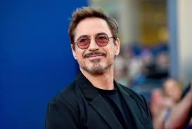
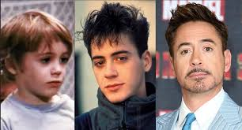
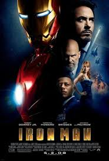
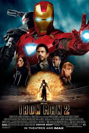
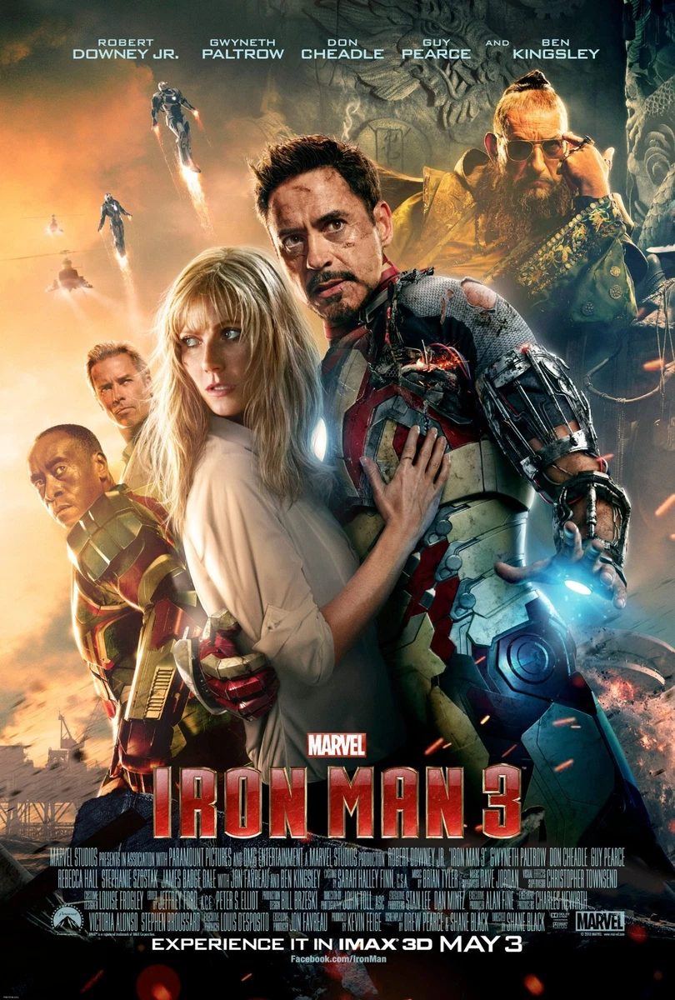
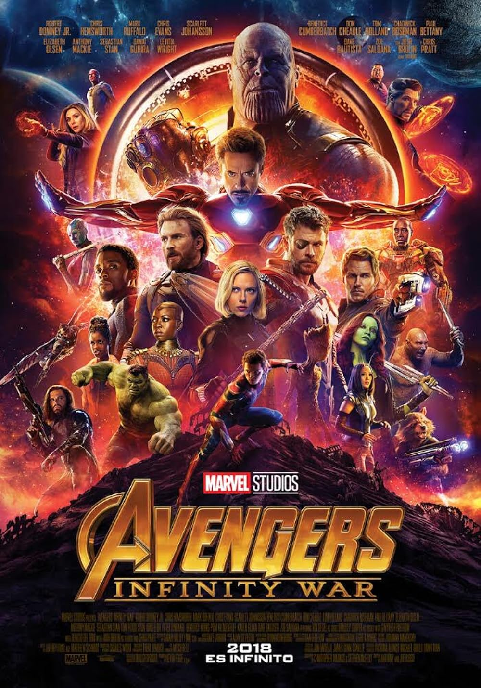
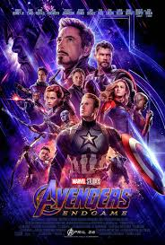

Conoces a Robert Downey Jr?
El actor que interpretó a Iron Man

Conozcamos quién es
Robert Downey Jr. es un actor, actor de voz, productor y cantante estadounidense. Inició su carrera como actor a temprana edad en varios filmes dirigidos por su padre, Robert Downey Sr., y en su infancia estudió actuación en varias academias de Nueva York. Se mudó con su padre a California, pero abandonó sus estudios para enfocarse completamente en su carrera.
Tras numerosos proyectos fallidos, ganó relevancia en el cine protagonizando la película Chaplin (1992), actuación con que ganó un BAFTA y recibió una nominación a los premios Óscar y los Globo de Oro. Sin embargo, se vio envuelto en una serie de problemas legales por posesión de drogas que llevaron a que fuera arrestado en varias ocasiones y a su vez que las productoras se negaran a contratarlo para nuevos papeles.
Biografía
Robert John Downey Jr. nació el 4 de abril de 1965 en Manhattan, en la ciudad de Nueva York (Estados Unidos), hijo de Robert Downey Sr. y Elsie Ann, ambos actores. Tiene una hermana mayor llamada Allyson, y tiene ascendencia lituania, húngara e irlandesa por su padre, así como alemana, suiza y escocesa por su madre. El apellido original de su familia era Elias, pero su padre lo cambió a Downey para poder unirse al ejército de los Estados Unidos. Pasó la mayor parte de su infancia en Greenwich Village, una villa de Manhattan. Downey asegura que desde pequeño, siempre estuvo rodeado de drogas, debido a que su padre era un adicto. Su padre le hizo probar la marihuana cuando solo tenía 6 años de edad, según comentó, las sustancias siempre fueron una forma en la que ambos podían conectarse, pues pasaban las noches consumiendo alcohol e ingiriendo distintas drogas.

A los 10 años, Downey ya consumía drogas de forma regular, y su padre lo inscribió en varias escuelas de danza para que canalizara su energía. A los 13 años, sus padres se divorciaron, y él se mudó con su padre a California. En 1982, abandonó la escuela para dedicarse por completo a su carrera como actor.
Películas destacadas
- Iron Man

- Iron Man 2

- Iron Man 3

- Avengers: Infinity War

- Avengers: Endgame

- Sherlock Holmes